와인잔 추천 하이엔드 퀄리티의 수제 핸드블로우 크리스탈 글라스
오늘은 보기만 해도 가슴이 설레는, 그리고 한 모금의 와인을 마셔도 그 가치를 몇 단계는 더 올려줄 프리미엄 와인 글라스 컬렉션을 소개해 드리려고 합니다.
오늘은 보기만 해도 가슴이 설레는, 그리고 한 모금의 와인을 마셔도 그 가치를 몇 단계는 더 올려줄 프리미엄 와인 글라스 컬렉션을 소개해 드리려고 합니다.
와인을 좋아하시는 분들이라면 누구나 한 번쯤 '잔의 중요성'에 대해 들어보셨거나 직접 경험해보셨을 겁니다. 같은 와인이라도 어떤 잔에 담기느냐에 따라 향의 확산, 입술에 닿는 촉감, 그리고 혀끝으로 떨어지는 각도가 달라져 완전히 다른 맛을 내기 때문이죠.
오늘 소개해 드리는 글라스는 고가의 수입 하이엔드 글라스와 견주어도 전혀 손색없는 압도적인 퀄리티를 자랑하면서도, 일상에서 부담 없이 즐길 수 있는 지극히 합리적인 가격으로 찾아왔습니다. 여러분의 홈바와 와인 라이프를 한 단계 업그레이드해 줄 특별한 기회를 지금 확인해 보세요!

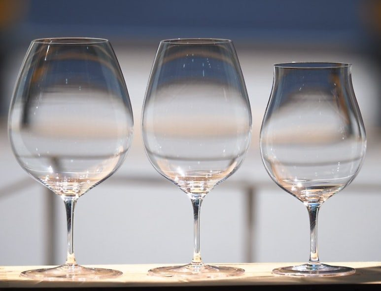
✨ 눈으로 먼저 마시는 예술
100% Hand Blown & Lead-Free Crystal
이 와인잔이 특별한 이유는 제작 과정과 소재에서부터 드러납니다.
장인의 숨결이 담긴 핸드블로우(Hand Blown) 기계로 찍어내는 대량 생산 글라스와는 비교할 수 없습니다. 장인이 하나하나 입으로 불어 만드는 전통 핸드블로우 방식으로 제작되어, 잔의 두께가 놀라울 정도로 얇고 가벼우며 극도로 섬세한 실루엣을 자랑합니다. 와인을 잔에 따랐을 때 손에 전해지는 가벼움과, 잔을 부딪칠 때 울려 퍼지는 청아하고 깊은 맑은 소리는 오직 수제 글라스에서만 느낄 수 있는 특권입니다.
투명하고 안전한 무연산 크리스탈(Lead-Free Crystal) 납 성분이 전혀 포함되지 않은 친환경 '리드 프리 크리스탈' 소재를 사용하여 인체에 무해하며 안심하고 사용할 수 있습니다. 빛을 흡수하고 반사하는 굴절률이 뛰어나 와인 고유의 빛깔과 눈물(Legs)을 가장 맑고 투명하게 관찰할 수 있도록 도와줍니다.
🎁 오직 나만을 위한, 혹은 소중한 분을 위한 특별한 옵션
개인 소장은 물론이고 집들이 선물, 결혼 선물, 기업 정기 기프트로도 완벽한 선택이 될 수 있도록 커스텀 및 패키지 옵션을 제공합니다. 이미지(image_b4bb0b.png)에서 고급스러운 실제 커스텀 및 패키징 모습을 확인하실 수 있습니다.
세상에 하나뿐인 '로고 각인 서비스'
글라스 각인: 잔당 단돈 6,000원으로 나만의 이니셜이나 시그니처 로고를 정교하게 새겨 특별함을 더해보세요.
원목함 각인: 원목 케이스 패키지에 1만원대을 추가하시면 품격 있는 커스텀 각인이 가능하여 선물용으로 인기가 높습니다.
최고급 프리미엄 목함 케이스: 5만원대
소중한 잔을 안전하고 기품 있게 보관할 수 있는 원목 손잡이 케이스입니다. 내부에는 잔의 형태에 맞춘 안전 스펀지가 들어있어 야외 캠핑이나 와인 모임 시 들고 이동하기에도 완벽합니다.
후즈, 블랑, 페티앙 3종 가능
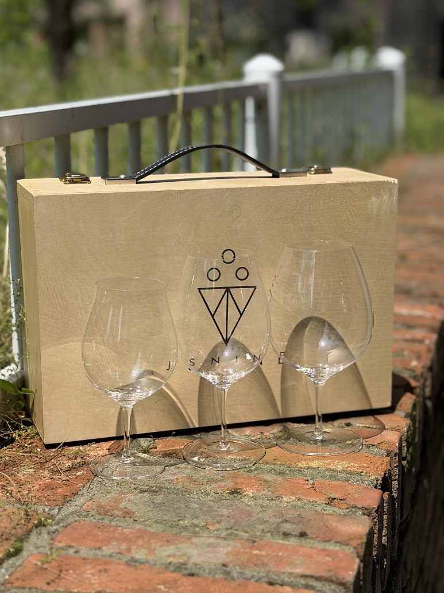
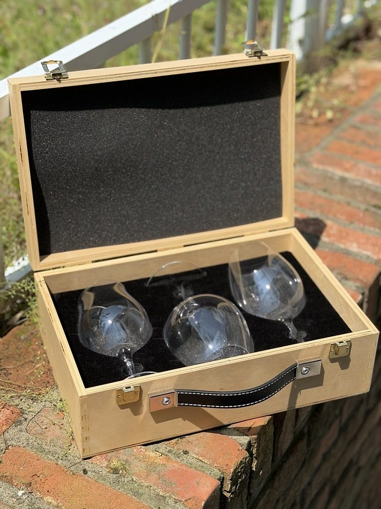
프로페셔널 잔 클리너 (3장 세트): 2만원대
크리스탈 글라스의 생명은 얼룩 없는 투명함이죠! 물자국과 먼지 없이 와인잔을 반짝이게 닦아주는 전용 극세사 클리너 세트도 함께 만나보실 수 있습니다.
🛍️ 놓치면 아쉬운 스마트한 주문 혜택 (믹스 매치 가능!)
와인잔을 구매할 때 '한 품종으로만 6개를 사야 하나?' 고민하셨던 분들을 위해 준비한 파격적인 주문 조건입니다.
자유로운 믹스 가능 (6개 단위 주문)
1번부터 7번까지 여러분의 와인 취향에 맞춰 원하는 잔을 마음대로 섞어서 총 6개 단위로 주문이 가능합니다! (예: 유니버셜 2개 + 보르도 2개 + 부르고뉴 2개 = 총 6개)
샴페인 30,000
유니버살 33,000
보르도 35,000
부르고뉴 38,000
후즈 38,000
블랑 35,000
페티앙 33,000
전 지역 무료배송 혜택
깨지기 쉬운 글라스인 만큼, 꼼꼼하고 안전한 완충 포장은 기본! 배송비 부담 없이 집 앞까지 안전하게 보내드립니다.
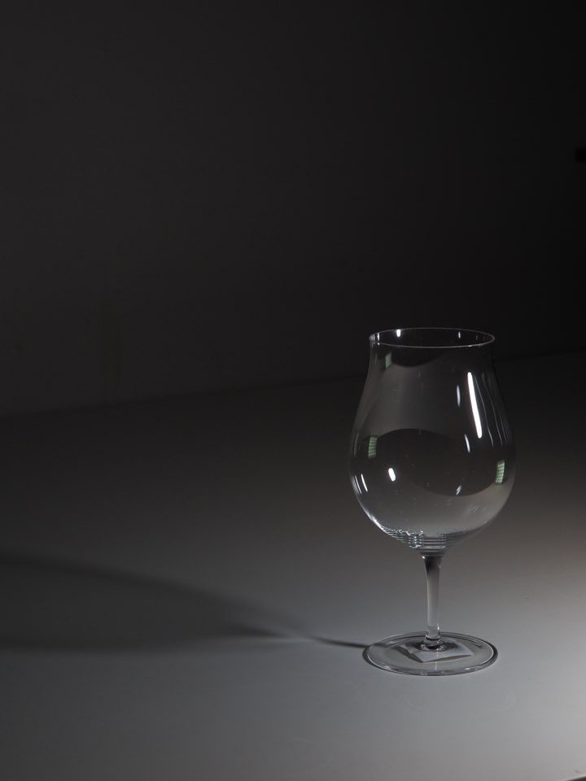
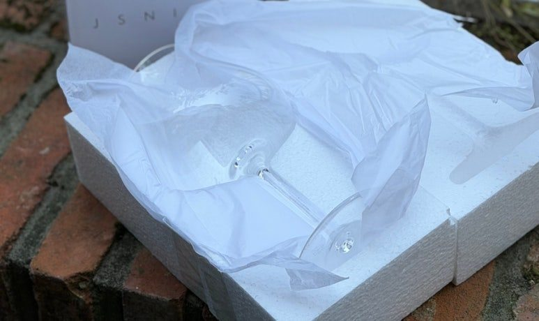
대량 구매 추가 할인
12개 이상 구매 시 총금액에서 5% 추가 할인 혜택이 적용됩니다. 홈바를 새로 채우시거나 와인 모임용, 레스토랑 기물 교체를 고민 중이시라면 이번 기회를 절대 놓치지 마세요.
고가의 글라스가 주는 심미성과 기능성은 그대로 가져가되, 가격 거품은 걷어냈습니다. 좋은 와인을 마시는 것만큼이나, 그 와인을 담아내는 '잔'에 투자하는 것은 나의 일상을 대접하는 가장 우아한 방법입니다.
제품 문의 및 각인 서비스 신청, 주문 방법은 아래 댓글이나 프로필 링크를 통해 언제든 편하게 남겨주세요! 오늘도 좋아하는 와인과 함께 행복하고 반짝이는 밤 되시길 바랍니다. 🍷
🍷 취향과 와인 스타일에 맞춘 7가지 라인업
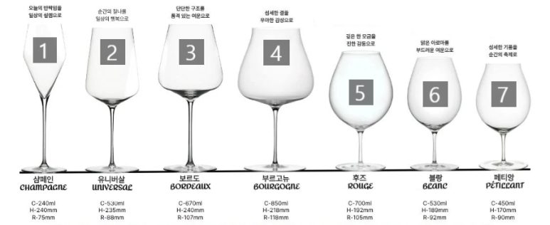
1. 샴페인 (Champagne)
용량: 240ml, 높이: 240mm, 직경: 75mm
"오늘의 반짝임을 일상의 설렘으로"
스파클링 와인의 기포가 아름답게 피어오르고 탄산이 오래 유지되도록 좁고 깊게 설계된 직선미가 돋보이는 잔입니다.
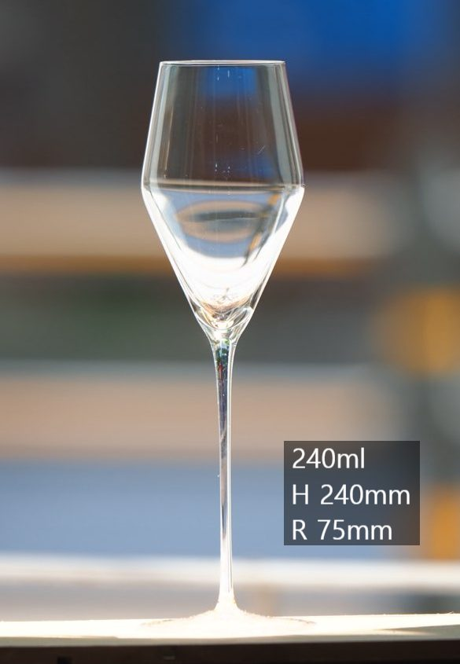
2. 유니버살 (Universal)
용량: 530ml, 높이: 235mm, 직경: 88mm
"순간의 찰나를 일상의 행복으로"
레드, 화이트, 로제 등 품종을 가리지 않고 올라운드로 편하게 사용할 수 있어 입문자나 데일리 잔으로 가장 추천하는 밸런스 좋은 잔입니다.
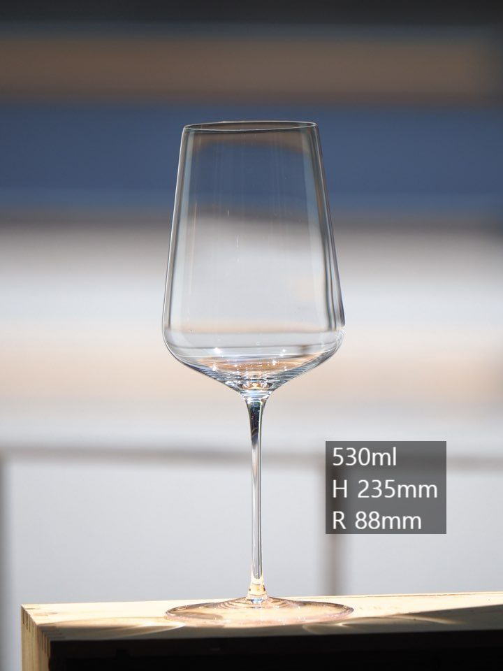
3. 보르도 (Bordeaux)
용량: 670ml, 높이: 240mm, 직경: 107mm
"단단한 구조를 품격 있는 여운으로"
묵직한 타닌과 풍부한 바디감을 가진 보르도 스타일 와인의 잠재력을 깨우기 위해 볼(Bowl)의 크기를 키우고 아로마를 모아주는 구조입니다.
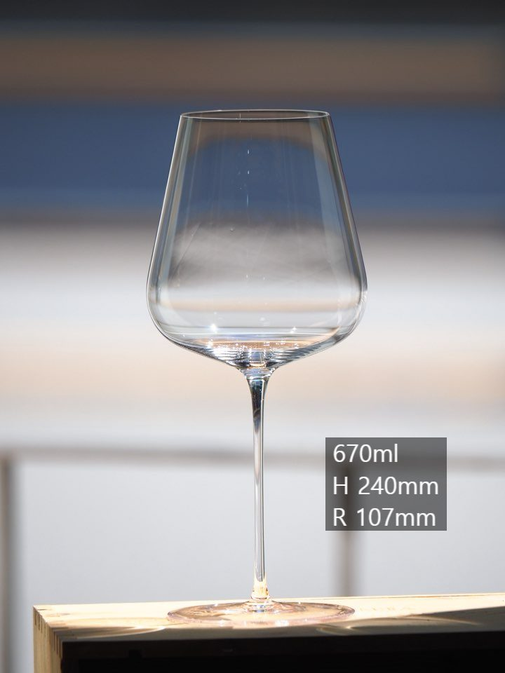
4. 부르고뉴 (Bourgogne)
용량: 850ml, 높이: 218mm, 직경: 118mm
"섬세한 결을 우아한 감성으로"
피노 누아처럼 섬세하고 화려한 향을 극대화하기 위해 아래쪽 볼은 넓고, 상단 림(Rim)은 살짝 좁아지는 우아한 실루엣의 대용량 잔입니다.
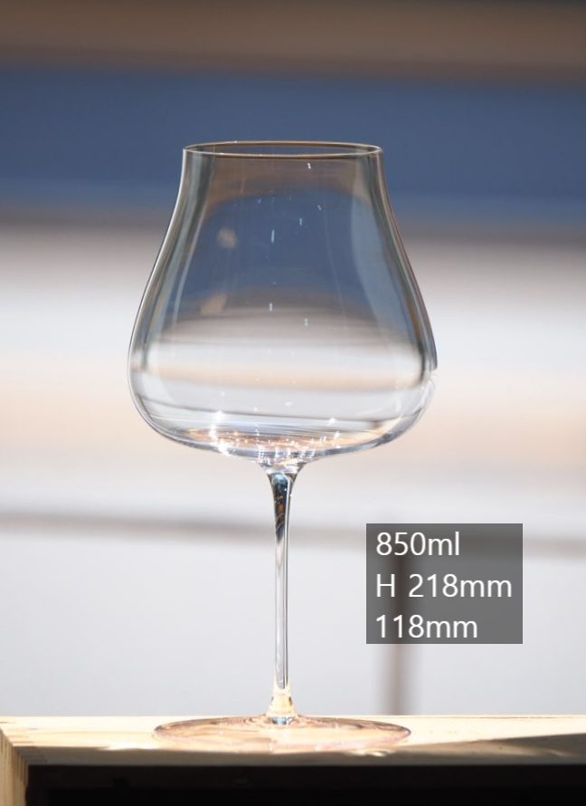
5. 후즈 (Rouge)
용량: 700ml, 높이: 192mm, 직경: 105mm
"깊은 한 모금을 진한 감동으로"
한층 더 볼륨감 있는 하부 구조로 와인이 공기와 접촉하는 면적을 넓혀, 진하고 깊은 레드 와인의 풍미를 부드럽게 풀어줍니다.
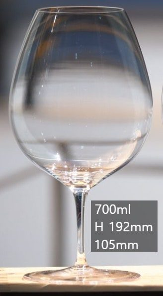
6. 블랑 (Blanc)
용량: 530ml, 높이: 189mm, 직경: 92mm
"맑은 아로마를 부드러운 여운으로"
화이트 와인의 산뜻한 산미와 시트러스한 향을 혀의 앞부분으로 바로 전달해 주어 화이트 와인의 청량함을 극대화합니다.
7. 페티앙 (Pétillant)
용량: 450ml, 높이: 170mm, 직경: 90mm
"섬세한 기품을 순간의 축제로"
가벼운 스파클링이나 내추럴 와인, 영한 화이트 와인을 아기자기하고 생동감 있게 즐기기에 최적화된 귀여운 실루엣의 잔입니다.
이 글은 땡큐와인 네이버 블로그에 먼저 올린 글이에요.